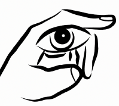
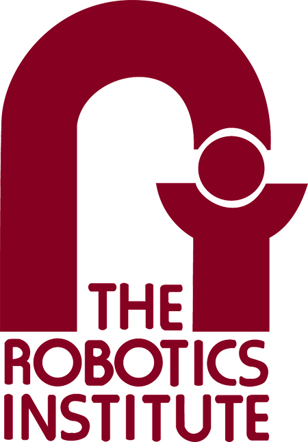
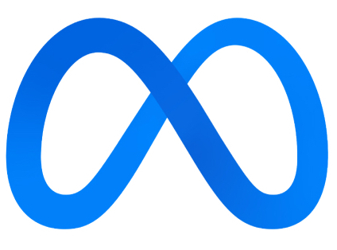
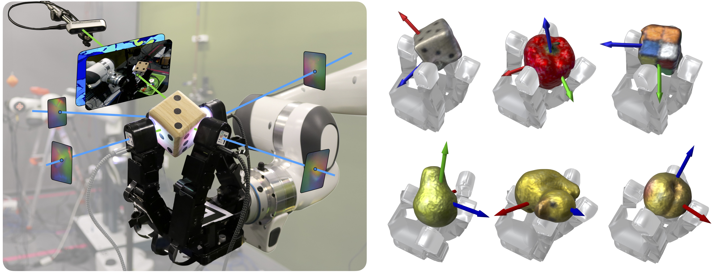

Neural feels with neural fields
Visuo-tactile perception for in-hand manipulation
- Sudharshan Suresh 1, 2
- Haozhi Qi 2, 3
- Tingfan Wu 2
- Taosha Fan 2
- Luis Pineda 2
- Mike Lambeta 2
- Jitendra Malik 2, 3
- Mrinal Kalakrishnan 2
- Roberto Calandra 4, 5
- Michael Kaess 1
- Joseph Ortiz 2
- Mustafa Mukadam 2
-

-

- 1 CMU
- 2 FAIR
- 3 UC Berkeley
- 4 TU Dresden
- 5 CeTI
TL;DR: Neural perception with vision and touch yields robust tracking
and reconstruction of novel objects for in-hand manipulation.
Overview

To achieve human-level dexterity, robots must infer spatial awareness from multimodal sensing to reason over contact interactions. During in-hand manipulation of novel objects, such spatial awareness involves estimating the object's pose and shape. The status quo for in-hand perception primarily employs vision, and restricts to tracking a priori known objects. Moreover, visual occlusion of objects in-hand is imminent during manipulation, preventing current systems to push beyond tasks without occlusion. We combine vision and touch sensing on a multi-fingered hand to estimate an object's pose and shape during in-hand manipulation. Our method, NeuralFeels, encodes object geometry by learning a neural field online and jointly tracks it by optimizing a pose graph problem. We study multimodal in-hand perception in simulation and the real-world, interacting with different object via a proprioception-driven policy. Our experiments show final reconstruction F-scores of \(81\)% and average pose drifts of \(4.7\,\text{mm}\), further reduced to \(2.3\,\text{mm}\) with known CAD models. Additionally, we observe that under heavy visual occlusion we can achieve up to \(94\)% improvements in tracking compared to vision-only methods. Our results demonstrate that touch, at the very least, refines and, at the very best, disambiguates visual estimates during in-hand manipulation. We release our evaluation dataset of 70 experiments, FeelSight, as a step towards benchmarking in this domain. Our neural representation driven by multimodal sensing can serve as a perception backbone towards advancing robot dexterity.
Neural SLAM: embodied perception from scratch
sim
real
sim
sim
real
sim
real
real
sim
real
real
sim
Click on each object to view results, hover to pause
In both real-world and simulation, we build an evolving neural SDF that integrates vision and touch while simultaneously tracking the object. We illustrate the input stream of RGB-D and tactile images, paired with the posed reconstruction at that timestep.
Neural tracking: perceiving objects given CAD models
As a special case, we demonstrate superior multimodal pose tracking when provided the CAD models of the objects at runtime. The object's SDF model is pre-computed and we freeze the weights of the neural field, to only perform visuo-tactile tracking with the frontend estimates.
Percieving under duress: the effects of occlusion
With occluded viewpoints, visuo-tactile fusion helps improve tracking performance with an unobstructed local perspective. We quantify these gains across a sphere of camera viewpoint to show improvements, particularly in occlusion-heavy points-of-view. We observe that touch plays a larger role when vision is heavily occluded, and a refinement role when we there is negligible occlusion.
Our neural optimization relies on segmented object depth as input: the frontend is engineered to robustly singulate object depth from vision. Depth is available as-is in an RGB-D camera, but the challenge is to robustly segment out pixels of interest in heavily-occluded interactions. Towards this, we introduce a kinematics-aware segmentation strategy based on powerful vision foundation models.
While vision-based touch sensors interpret contact geometry as images, they remain out-of-distribution from natural images. The embedded camera directly perceives the illuminated gelpad, and contact depth is either obtained via photometric stereo, or supervised learning. Existing touch-to-depth relies on convolution, however recent work has shown the benefit of a ViT for dense depth prediction in natural images. We present a tactile transformer for predicting contact depth from vision-based touch, trained entirely in simulation to generalize across multiple real-world DIGIT sensors.
The backend module ingests the intermediate output from the frontend, and builds our persistent object model online. This alternates between map and pose optimizer steps using samples from the visuo-tactile depth stream. In our map optimizer, the weights of an instant-NGP model fully-describe the 3D geometry of the object. We formulate pose optimization as a nonlinear least squares problem with custom measurement factors in Theseus.
The FeelSight dataset
Our FeelSight dataset will empower practitioners in the domain of visuo-tactile manipulation, where there is both a lack of experimental standardization and scarcity of benchmarks. It comprises of a total of 70 rotation sequences in both the real-world and simulation, with ground-truth object meshes and tracking.
Video presentation
Bibtex
Acknowledgements
The authors thank Dhruv Batra, Theophile Gervet, Akshara Rai for feedback on writing, and Wei Dong, Tess Hellebrekers, Carolina Higuera, Patrick Lancaster, Franziska Meier, Alberto Rodriguez, Akash Sharma, Jessica Yin for helpful discussions on the research.
The website uses the MidasTouch template, in turn based on John Barron/Michaël Gharbi's websites.